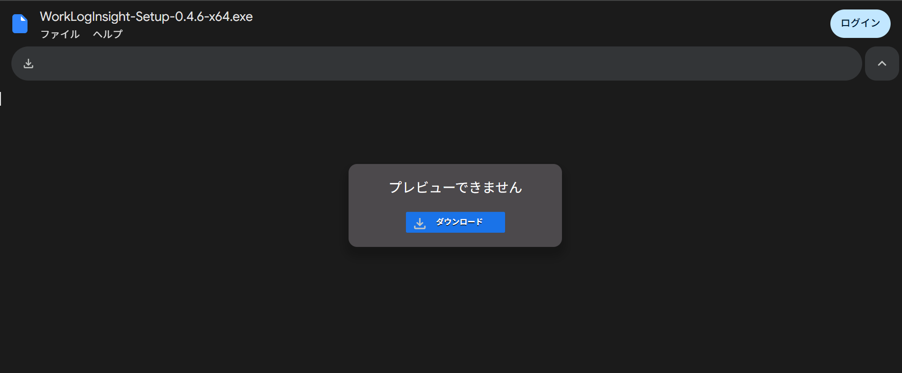
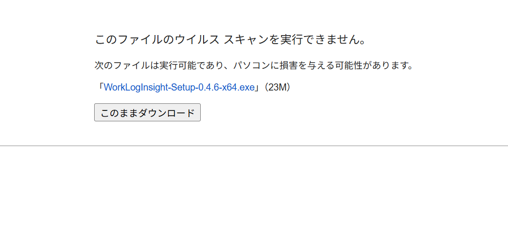
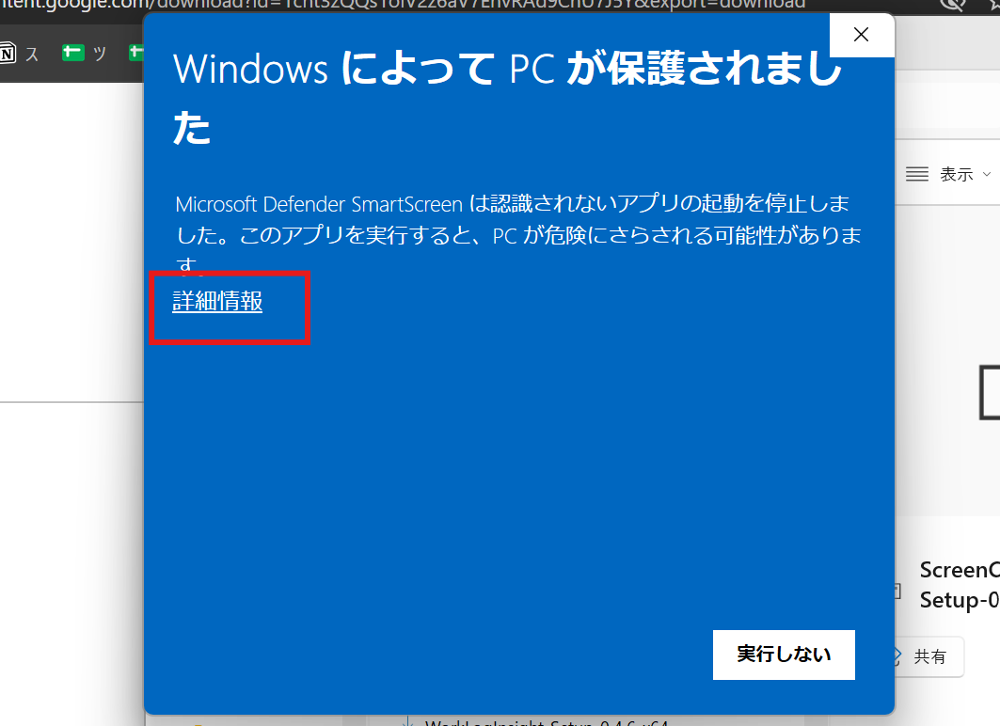
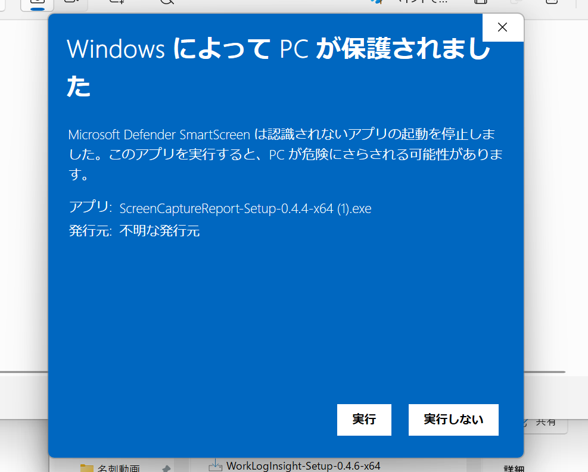
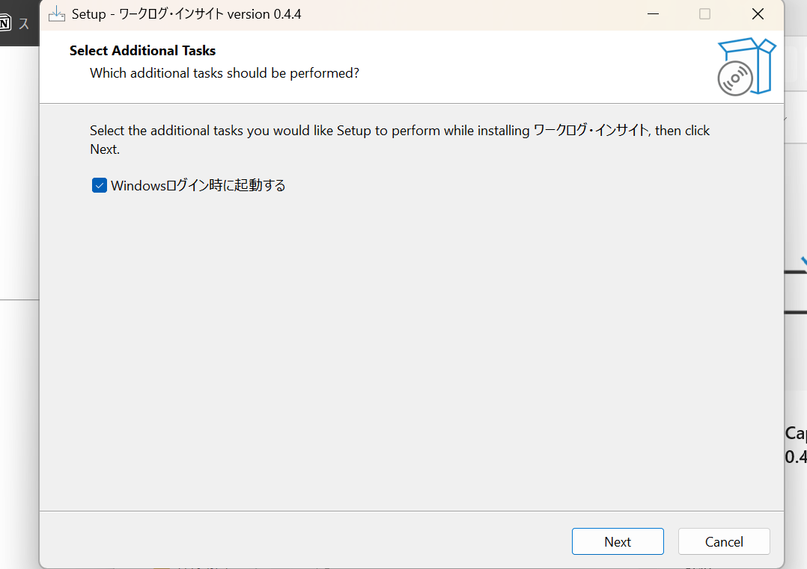
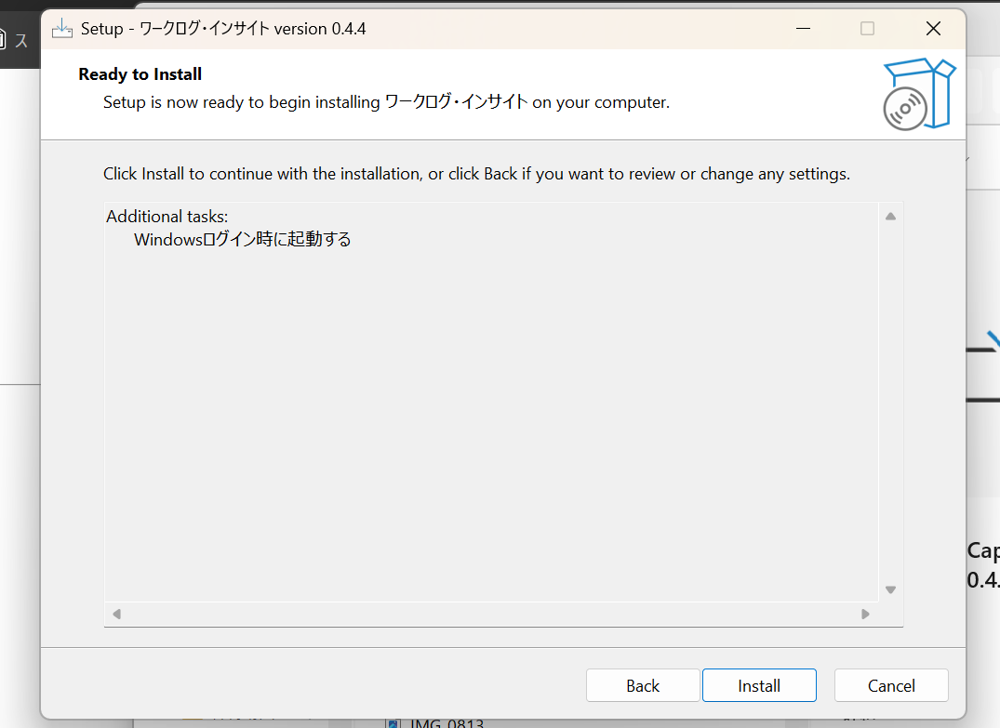
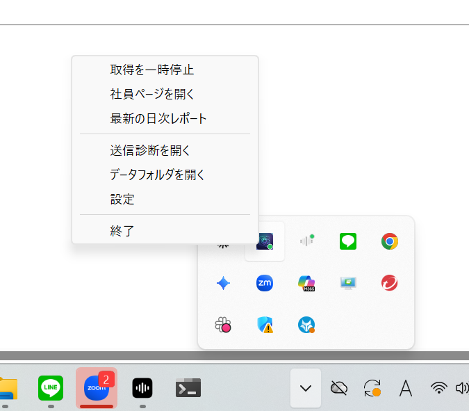
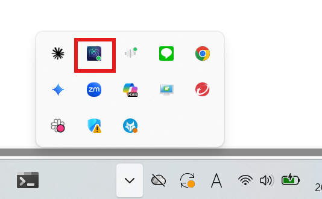
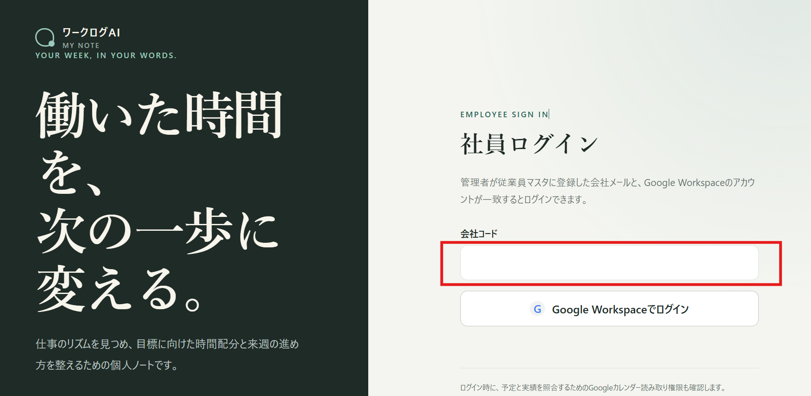
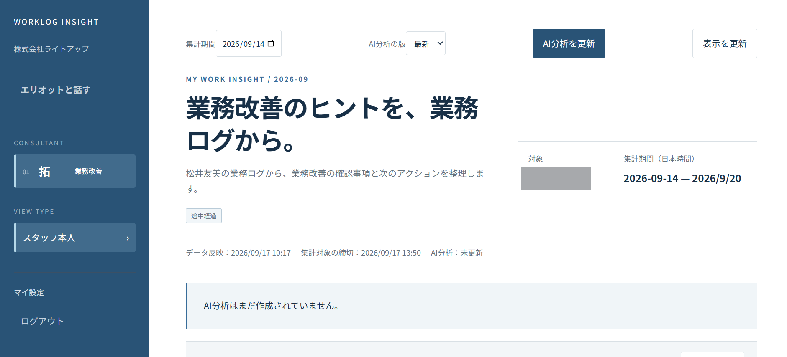

1分に1回、画面を自動で記録。設定は1台あたり5分で完了します。
この度はワークログ・インサイトをご導入いただき、ありがとうございます。ご利用開始にあたり、社員の皆さまのパソコンに専用アプリを入れる設定をお願いいたします。上から順に進めてください。
パソコンの画面を1分に1回自動で記録し、「誰が・何に・どれくらい時間を使っているか」を見える化するサービスです。
一度設定すれば、パソコンを起動してからシャットダウンするまで自動で記録されます。社員の皆さまが毎日ボタンを押す必要はありません。
パソコンに映っている画面がそのまま記録されます。
モニターを2台つないでいる場合は、2画面とも記録されます。
※Macをお使いの経営者・管理職の方も、管理画面から社員の皆さまの記録を見ることは可能です。

「このファイルのウイルス スキャンを実行できません。」と表示されたら、このままダウンロードを押してください。

パソコンの「ダウンロード」フォルダを開き、ダウンロードしたファイルをダブルクリックしてください。
「WindowsによってPCが保護されました」と表示された場合は、詳細情報を押してください。

実行を押してください。

「Windowsログイン時に起動する」にチェックが入っていることを確認し、Nextを押してください。
※チェックを入れておくと、次回からパソコンを起動したときに自動で記録が始まります。

Installを押してください。インストールが終わったらFinishを押します。

画面右下（Wi-Fiマークの左側）にある上矢印マークを押してください。
ワークログ・インサイトのアイコン（青い四角いアイコン）を右クリックし、社員ページを開くをクリックしてください。

運営からお送りしている「会社コード」と「従業員ID」を入力してください。
※会社コードの英字は小文字で入力してください。
同意して利用開始を押してください。
もう一度「上矢印マーク」を押し、ワークログ・インサイトのアイコン（青い四角いアイコン）が増えていれば設定完了です。
※反映まで少し時間がかかる場合があります。
※アイコンが出てこない場合は、うまくいかないときはをご覧ください。

このあとは、パソコンを起動してからシャットダウンするまで、自動で1分に1回画面が記録されます。社員の皆さまに操作していただくことは、特にありません。
アイコンを押すと、以下のメニューが表示されます。
経営者・管理職の方も、スタッフの方も、同じURLからログインします。
「経営者・管理職」の入口からログインすると、ワークログ・インサイトを入れた社員の皆さまの記録（1分ごとの画面一覧など）を確認できます。
ご自身の記録を見て、1日の振り返りにお使いいただけます。
「会社コード」を入力してください。

Google Workspaceでログインを押してください。
※管理者が登録した会社のメールアドレスと、Googleアカウントが一致するとログインできます。
※ログイン時に、Googleカレンダーの読み取り許可の確認が表示されます。
ログインすると、ご自身の記録をもとにした画面が表示されます。

設定中につまずいた場合や、画面の表示が手順と違う場合も、以下のフォームからご連絡ください。